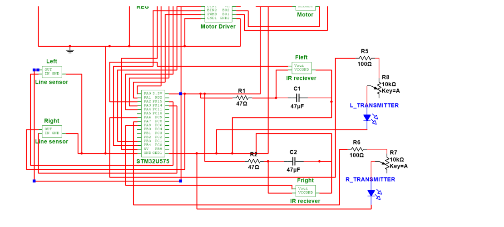

Overview
I designed, built, and tested an autonomous Sumobot for competition. After a five second start delay, the robot hunts for an opponent, drives forward to push it out of the ring, and backs away when it senses the ring edge, all running in bare metal C on an STM32U575. The robot is organized into five subsystems, power, motion, display, line sensing, and object detection, and a finite state machine ties their inputs together into the full search and push behavior.

How it works
Five AA cells supply 7.5 V. A 5 V regulator powers the STM32U575, which in turn provides 3.3 V to the sensors, while the motors run from the unregulated battery rail through the motor driver. Two analog reflectance sensors at the front read the ring edge, an infrared transmitter and receiver pair watches for opponents, and an LCD shows live readings and state messages so tuning on the bench is fast. The behavior itself lives in a finite state machine that moves between searching, engaging, and edge recovery based on what the sensors report.
What I built
1) Motion and motor control
- Drove two motors through a dual H bridge driver using a hardware timer in PWM mode at about 3 kHz to set speed, with four GPIO pins controlling direction.
- Wrote movement primitives for forward, backward, turning, spinning, and stop, then verified each one's PWM waveform and duty cycle on an Analog Discovery scope.
2) Line sensing and object detection
- Read the two reflectance sensors with a multi channel ADC, converted reflected light to a percentage, and thresholded it into a binary white or black decision for the ring edge.
- Generated a modulated infrared carrier near 38 kHz with a timer in toggle mode, pulsing about 0.48 ms on and 5 ms off, and tuned detection distance with a potentiometer.
3) Behavior firmware and FSM
- Structured the firmware around register level initialization routines for the clock, GPIO, timers, ADC, and interrupts, with clean movement functions on top.
- Implemented a finite state machine over forward, backward, left turn, and right turn states, using interrupt service routines to read the ADC channels and toggle the IR carrier.
- Surfaced sensor percentages and state messages such as "Searching", "Got you", and "Whoops" on the LCD to make debugging and threshold tuning quick.
Full system schematic

Skills and techniques used
Beyond the basics on my resume, this project came together through a lot of low level embedded work:
Testing and results
- Authored a full test plan with per subsystem procedures, expected versus actual results, and troubleshooting steps. Every subsystem passed its bench test.
- Met all three competition constraints, a footprint under 7 by 7 inches (measured 6.7 by 6.5), a weight under 1.5 lb (about 1.39 lb), and a five second start delay.
- Verified power delivery at 7.27 V on the main rail, 4.98 V regulated, and 3.29 V logic, and tuned the line sensor thresholds against measured white and black readings.